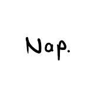

ABOUT US

berawal dari sebuah kesukaan bermain game menjadi sebuah passion untuk menciptakan game sendiri.
Cerita lengkap di balik Napdev
Napdev adalah perusahaan teknologi yang berfokus pada pengembangan produk digital, mulai dari website, aplikasi mobile, game, hingga solusi enterprise. Kami percaya bahwa teknologi yang baik harus terasa sederhana, cepat, dan menyenangkan bagi penggunanya.
Selama lebih dari 8 tahun, kami telah bekerja sama dengan berbagai klien — dari startup lokal hingga perusahaan multinasional. Setiap proyek kami perlakukan sebagai kemitraan jangka panjang, bukan sekadar transaksi.
Kami menggabungkan keahlian teknis, desain yang thoughtful, dan strategi bisnis yang matang untuk menghasilkan produk yang tidak hanya indah, tetapi juga berdampak nyata pada pertumbuhan bisnis klien kami.
Menjadi perusahaan pengembangan produk digital terdepan di Asia Tenggara yang dikenal karena kualitas, inovasi, dan dampak positifnya bagi pertumbuhan bisnis dan masyarakat.